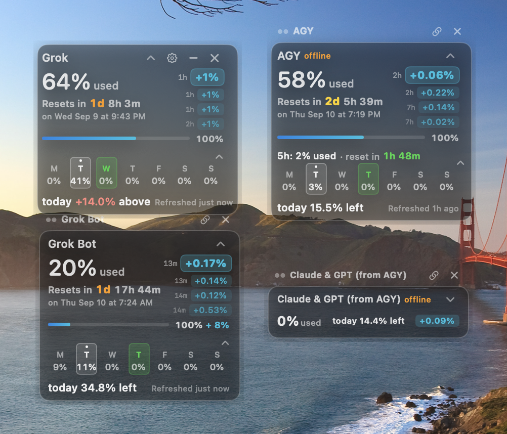

BigUwidget · desktop widget
AI quotas,
always in view.
Always-on-top panel for weekly and 5-hour usage on Grok, Grok Bot in Cursor, Antigravity, and ChatGPT. Native on Mac. Glass on Linux. Unofficial and free.
Mac is native 1.1.5 (DMG). Linux and Windows are 1.1.9. Do not mix those version numbers.

Grok
grok.com / xAI
Grok Bot
in Cursor
AGY
Gemini via Antigravity
Claude & GPT
from Antigravity
ChatGPT
optional card